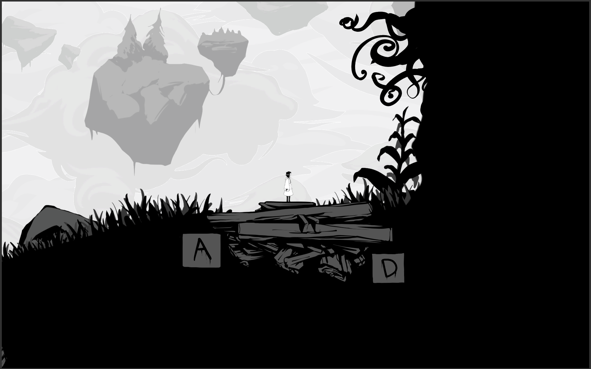
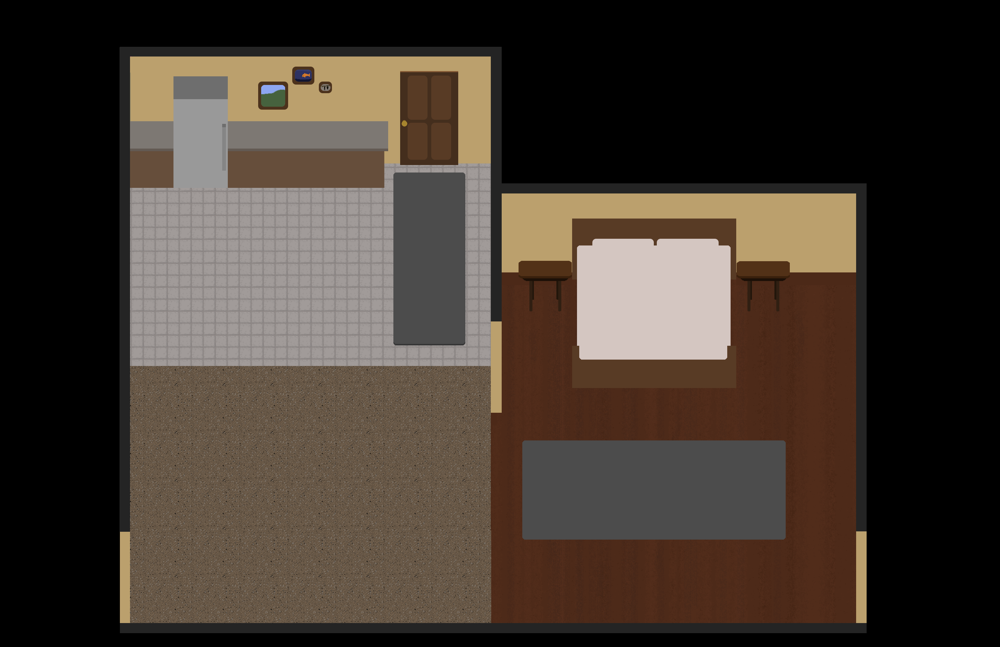

Asunder
Asunder is a puzzle platformer that has you control two characters, one who may never leave the light and another who must always stay within the shade. Guide both of them through a surreal world that is coming apart at the seams through environmental manipulation and discovery.
In order to reach your goal, you must control two different characters with different lighting properties to be able to uncover the secrets of the world. By interacting with the objects in the world, you are able to manipulate light to allow a character to continue to traverse through the world.

Eldritch Night
Eldritch Night is a isometric top down survival horror game where you controll a man having eldritch nightmares. You must survive these dreams by avoiding the monsters that live inside of them. Survive a set of 4 nights from a total of six to experience a different set of experiences every play.
